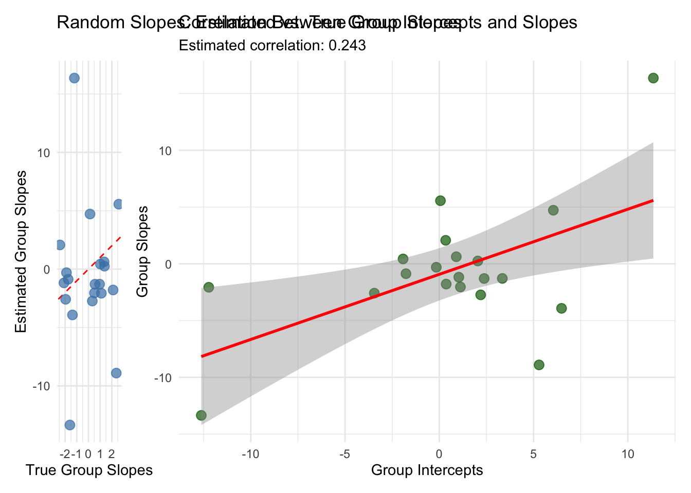
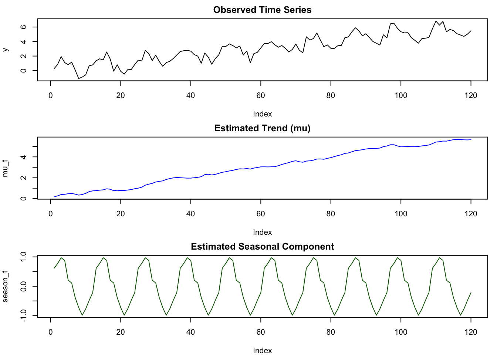

Chapter 6 Bayesian Quantile Regression
6.1 Introduction
Quantile regression extends traditional regression analysis beyond the conditional mean to model the entire conditional distribution of the response variable. For a response variable \(Y\) and predictor variables \(\mathbf{X}\), the \(\tau\)-th quantile function is defined as \(Q_\tau(Y|\mathbf{X}) = \inf\{y : F_{Y|\mathbf{X}}(y) \geq \tau\}\), where \(F_{Y|\mathbf{X}}(y)\) represents the conditional cumulative distribution function and \(\tau \in (0,1)\) denotes the quantile level. This formulation allows researchers to examine how predictor variables influence different portions of the response distribution, providing insights that may be obscured when focusing solely on conditional means.
The mathematical foundation of quantile regression rests on the asymmetric Laplace distribution (ALD), which serves as the working likelihood. For the \(\tau\)-th quantile, the ALD has the probability density function:
\[f(y|\mu, \sigma, \tau) = \frac{\tau(1-\tau)}{\sigma} \exp\left(-\rho_\tau\left(\frac{y-\mu}{\sigma}\right)\right)\]
where \(\mu\) represents the location parameter (the \(\tau\)-th quantile), \(\sigma > 0\) is the scale parameter, and \(\rho_\tau(u) = u(\tau - I(u < 0))\) is the check function with \(I(\cdot)\) being the indicator function. This check function is fundamental to quantile regression as it provides the loss function that is minimized during estimation: \(\sum_{i=1}^n \rho_\tau(y_i - \mathbf{x}_i^T\boldsymbol{\beta})\).
The Bayesian framework transforms quantile regression into a hierarchical model where uncertainty is explicitly modeled through prior distributions. Consider the linear quantile regression model \(Q_\tau(Y_i|\mathbf{x}_i) = \mathbf{x}_i^T\boldsymbol{\beta}_\tau\), where \(\boldsymbol{\beta}_\tau\) represents the vector of regression coefficients specific to the \(\tau\)-th quantile. In the Bayesian setting, we specify prior distributions for these parameters, typically \(\boldsymbol{\beta}_\tau \sim \mathcal{N}(\boldsymbol{\mu}_0, \boldsymbol{\Sigma}_0)\) for the regression coefficients and \(\sigma \sim \text{Inv-Gamma}(a, b)\) for the scale parameter. The posterior distribution is then proportional to the product of the likelihood and priors: \(p(\boldsymbol{\beta}_\tau, \sigma | \mathbf{y}, \mathbf{X}) \propto \prod_{i=1}^n f(y_i|\mathbf{x}_i^T\boldsymbol{\beta}_\tau, \sigma, \tau) \cdot p(\boldsymbol{\beta}_\tau) \cdot p(\sigma)\).
Stan implements this Bayesian quantile regression through efficient Hamiltonian Monte Carlo (HMC) sampling, which provides several computational advantages over traditional optimization-based methods. The HMC algorithm exploits the geometry of the posterior distribution by using gradient information to propose new states in the Markov chain, resulting in more efficient exploration of the parameter space. This is particularly beneficial for quantile regression models, which often exhibit multimodal or skewed posterior distributions due to the asymmetric nature of the loss function. The resulting MCMC samples provide a complete characterization of parameter uncertainty, enabling probabilistic statements about quantile estimates and facilitating hypothesis testing through posterior probability calculations.
The incorporation of prior information represents a significant advantage of the Bayesian approach, particularly in healthcare applications where domain expertise can inform model specification. Informative priors can be constructed based on previous studies, clinical knowledge, or expert opinion. For instance, if prior research suggests that a treatment effect is positive but with considerable uncertainty, this can be encoded through a normal prior centered at a positive value with appropriate variance. Mathematically, this might be expressed as \(\beta_{\text{treatment}} \sim \mathcal{N}(0.5, 1.0^2)\), indicating a belief that the treatment effect is likely positive but allowing for substantial uncertainty. Such priors serve as regularization mechanisms, particularly valuable when dealing with limited data or complex models prone to overfitting.
The Bayesian framework naturally provides uncertainty quantification through the posterior distribution, which contrasts sharply with frequentist approaches that rely on asymptotic approximations. For any function of the parameters \(g(\boldsymbol{\theta})\), credible intervals can be constructed directly from the posterior samples without relying on distributional assumptions. This is particularly valuable for quantile regression, where the sampling distribution of quantile estimates can be complex and non-normal. The posterior predictive distribution \(p(\tilde{y}|\mathbf{x}, \mathbf{y}, \mathbf{X})\) provides a complete description of uncertainty in future observations, enabling probabilistic forecasting and risk assessment.
Model comparison and selection within the Bayesian quantile regression framework can be performed using information-theoretic criteria such as the Widely Applicable Information Criterion (WAIC) or Leave-One-Out Cross-Validation (LOO-CV). These criteria balance model fit against complexity, providing guidance for variable selection and model specification. For nested models, Bayes factors can be computed to quantify the evidence in favor of one model over another: \(BF_{12} = \frac{p(\mathbf{y}|M_1)}{p(\mathbf{y}|M_2)}\), where \(p(\mathbf{y}|M_i)\) represents the marginal likelihood under model \(M_i\). Additionally, posterior predictive checking enables model validation by comparing observed data patterns with those generated from the fitted model.
Healthcare applications particularly benefit from Bayesian quantile regression due to the heterogeneous nature of clinical data and the importance of understanding distributional effects rather than just average treatment effects. Consider a clinical trial where the primary outcome exhibits heteroscedasticity across patient subgroups. Traditional mean regression might indicate no overall treatment effect, while quantile regression could reveal significant benefits for patients in the upper quantiles of the outcome distribution, corresponding perhaps to those with more severe disease. The Bayesian approach allows for the incorporation of prior knowledge about biological mechanisms, previous trial results, and regulatory requirements, while providing uncertainty estimates that are crucial for clinical decision-making.
The computational implementation in Stan leverages automatic differentiation to compute gradients of the log-posterior density, enabling efficient HMC sampling even for complex models with hundreds of parameters. Stan’s modeling language allows for flexible specification of hierarchical structures, time-varying coefficients, and non-linear relationships, making it particularly suitable for the complex models often encountered in healthcare research. The software automatically handles the transformation of constrained parameters, monitors convergence diagnostics, and provides comprehensive posterior summaries, making advanced Bayesian quantile regression accessible to applied researchers.
To illustrate the practical implementation of Bayesian quantile regression with Stan, we now examine a synthetic heteroskedastic dataset that demonstrates the method’s ability to capture distributional heterogeneity across the predictor space. This example will showcase how the Bayesian framework handles uncertainty quantification while revealing patterns that would be missed by traditional mean-based regression approaches.
6.2 Model Specification
6.2.1 Using bayesQR package
Simulate data from heteroskedastic regression
set.seed(66)
library(brms)
library(bayesQR)
n <- 200
X <- runif(n=n,min=0,max=10)
X <- X
y <- 1 + 2*X + rnorm(n=n, mean=0, sd=.6*X)Estimate series of quantile regressions with adaptive lasso to limit execution time of the example, ndraw is set to a very low value. Set value to 5000 for a better approximation of the posterior distirubtion.
library(brms)
library(bayesQR)
out <- bayesQR(y~X, quantile=c(.05,.25,.5,.75,.95), alasso=TRUE, ndraw=500)## ************************************************
## * Start estimating quantile 1 of 5 in total *
## ************************************************
## Current iteration :
## [1] 500
## ************************************************
## * Start estimating quantile 2 of 5 in total *
## ************************************************
## Current iteration :
## [1] 500
## ************************************************
## * Start estimating quantile 3 of 5 in total *
## ************************************************
## Current iteration :
## [1] 500
## ************************************************
## * Start estimating quantile 4 of 5 in total *
## ************************************************
## Current iteration :
## [1] 500
## ************************************************
## * Start estimating quantile 5 of 5 in total *
## ************************************************
## Current iteration :
## [1] 500Initiate plot
plot(X, y, main="", cex=.6, xlab="X")
## Add quantile regression lines to the plot (exclude first 500 burn-in draws)
sum <- summary(out, burnin=50)
for (i in 1:length(sum)){
abline(a=sum[[i]]$betadraw[1,1],b=sum[[i]]$betadraw[2,1],lty=i,col=i)
}
outOLS = lm(y~X)
plot(X, y, pch = 19, col = "blue")
abline(outOLS,lty=1,lwd=2,col=6)
# Add legend to plot
legend(x=0,y=max(y),legend=c(.05,.25,.50,.75,.95,"OLS"),lty=c(1,2,3,4,5,1),
lwd=c(1,1,1,1,1,2),col=c(1:6),title="Quantile")
6.2.2 Using brms package
n <- 200
x <- runif(n = n, min = 0, max = 10)
y <- 1 + 2 * x + rnorm(n = n, mean = 0, sd = 0.6*x)
dat <- data.frame(x, y)
# fit the 20%-quantile
fit <- brm(bf(y ~ x, quantile = 0.2), data = dat, family = asym_laplace())## Compiling Stan program...## Start sampling##
## SAMPLING FOR MODEL 'anon_model' NOW (CHAIN 1).
## Chain 1:
## Chain 1: Gradient evaluation took 0.000108 seconds
## Chain 1: 1000 transitions using 10 leapfrog steps per transition would take 1.08 seconds.
## Chain 1: Adjust your expectations accordingly!
## Chain 1:
## Chain 1:
## Chain 1: Iteration: 1 / 2000 [ 0%] (Warmup)
## Chain 1: Iteration: 200 / 2000 [ 10%] (Warmup)
## Chain 1: Iteration: 400 / 2000 [ 20%] (Warmup)
## Chain 1: Iteration: 600 / 2000 [ 30%] (Warmup)
## Chain 1: Iteration: 800 / 2000 [ 40%] (Warmup)
## Chain 1: Iteration: 1000 / 2000 [ 50%] (Warmup)
## Chain 1: Iteration: 1001 / 2000 [ 50%] (Sampling)
## Chain 1: Iteration: 1200 / 2000 [ 60%] (Sampling)
## Chain 1: Iteration: 1400 / 2000 [ 70%] (Sampling)
## Chain 1: Iteration: 1600 / 2000 [ 80%] (Sampling)
## Chain 1: Iteration: 1800 / 2000 [ 90%] (Sampling)
## Chain 1: Iteration: 2000 / 2000 [100%] (Sampling)
## Chain 1:
## Chain 1: Elapsed Time: 0.237 seconds (Warm-up)
## Chain 1: 0.223 seconds (Sampling)
## Chain 1: 0.46 seconds (Total)
## Chain 1:
##
## SAMPLING FOR MODEL 'anon_model' NOW (CHAIN 2).
## Chain 2:
## Chain 2: Gradient evaluation took 3.3e-05 seconds
## Chain 2: 1000 transitions using 10 leapfrog steps per transition would take 0.33 seconds.
## Chain 2: Adjust your expectations accordingly!
## Chain 2:
## Chain 2:
## Chain 2: Iteration: 1 / 2000 [ 0%] (Warmup)
## Chain 2: Iteration: 200 / 2000 [ 10%] (Warmup)
## Chain 2: Iteration: 400 / 2000 [ 20%] (Warmup)
## Chain 2: Iteration: 600 / 2000 [ 30%] (Warmup)
## Chain 2: Iteration: 800 / 2000 [ 40%] (Warmup)
## Chain 2: Iteration: 1000 / 2000 [ 50%] (Warmup)
## Chain 2: Iteration: 1001 / 2000 [ 50%] (Sampling)
## Chain 2: Iteration: 1200 / 2000 [ 60%] (Sampling)
## Chain 2: Iteration: 1400 / 2000 [ 70%] (Sampling)
## Chain 2: Iteration: 1600 / 2000 [ 80%] (Sampling)
## Chain 2: Iteration: 1800 / 2000 [ 90%] (Sampling)
## Chain 2: Iteration: 2000 / 2000 [100%] (Sampling)
## Chain 2:
## Chain 2: Elapsed Time: 0.247 seconds (Warm-up)
## Chain 2: 0.28 seconds (Sampling)
## Chain 2: 0.527 seconds (Total)
## Chain 2:
##
## SAMPLING FOR MODEL 'anon_model' NOW (CHAIN 3).
## Chain 3:
## Chain 3: Gradient evaluation took 3.2e-05 seconds
## Chain 3: 1000 transitions using 10 leapfrog steps per transition would take 0.32 seconds.
## Chain 3: Adjust your expectations accordingly!
## Chain 3:
## Chain 3:
## Chain 3: Iteration: 1 / 2000 [ 0%] (Warmup)
## Chain 3: Iteration: 200 / 2000 [ 10%] (Warmup)
## Chain 3: Iteration: 400 / 2000 [ 20%] (Warmup)
## Chain 3: Iteration: 600 / 2000 [ 30%] (Warmup)
## Chain 3: Iteration: 800 / 2000 [ 40%] (Warmup)
## Chain 3: Iteration: 1000 / 2000 [ 50%] (Warmup)
## Chain 3: Iteration: 1001 / 2000 [ 50%] (Sampling)
## Chain 3: Iteration: 1200 / 2000 [ 60%] (Sampling)
## Chain 3: Iteration: 1400 / 2000 [ 70%] (Sampling)
## Chain 3: Iteration: 1600 / 2000 [ 80%] (Sampling)
## Chain 3: Iteration: 1800 / 2000 [ 90%] (Sampling)
## Chain 3: Iteration: 2000 / 2000 [100%] (Sampling)
## Chain 3:
## Chain 3: Elapsed Time: 0.232 seconds (Warm-up)
## Chain 3: 0.23 seconds (Sampling)
## Chain 3: 0.462 seconds (Total)
## Chain 3:
##
## SAMPLING FOR MODEL 'anon_model' NOW (CHAIN 4).
## Chain 4:
## Chain 4: Gradient evaluation took 3.3e-05 seconds
## Chain 4: 1000 transitions using 10 leapfrog steps per transition would take 0.33 seconds.
## Chain 4: Adjust your expectations accordingly!
## Chain 4:
## Chain 4:
## Chain 4: Iteration: 1 / 2000 [ 0%] (Warmup)
## Chain 4: Iteration: 200 / 2000 [ 10%] (Warmup)
## Chain 4: Iteration: 400 / 2000 [ 20%] (Warmup)
## Chain 4: Iteration: 600 / 2000 [ 30%] (Warmup)
## Chain 4: Iteration: 800 / 2000 [ 40%] (Warmup)
## Chain 4: Iteration: 1000 / 2000 [ 50%] (Warmup)
## Chain 4: Iteration: 1001 / 2000 [ 50%] (Sampling)
## Chain 4: Iteration: 1200 / 2000 [ 60%] (Sampling)
## Chain 4: Iteration: 1400 / 2000 [ 70%] (Sampling)
## Chain 4: Iteration: 1600 / 2000 [ 80%] (Sampling)
## Chain 4: Iteration: 1800 / 2000 [ 90%] (Sampling)
## Chain 4: Iteration: 2000 / 2000 [100%] (Sampling)
## Chain 4:
## Chain 4: Elapsed Time: 0.228 seconds (Warm-up)
## Chain 4: 0.219 seconds (Sampling)
## Chain 4: 0.447 seconds (Total)
## Chain 4:## Family: asym_laplace
## Links: mu = identity; sigma = identity; quantile = identity
## Formula: y ~ x
## quantile = 0.2
## Data: dat (Number of observations: 200)
## Draws: 4 chains, each with iter = 2000; warmup = 1000; thin = 1;
## total post-warmup draws = 4000
##
## Regression Coefficients:
## Estimate Est.Error l-95% CI u-95% CI Rhat Bulk_ESS Tail_ESS
## Intercept 1.08 0.20 0.66 1.46 1.00 3146 2472
## x 1.43 0.05 1.33 1.54 1.00 2156 1963
##
## Further Distributional Parameters:
## Estimate Est.Error l-95% CI u-95% CI Rhat Bulk_ESS Tail_ESS
## sigma 0.84 0.06 0.73 0.96 1.00 2340 2532
## quantile 0.20 0.00 0.20 0.20 NA NA NA
##
## Draws were sampled using sampling(NUTS). For each parameter, Bulk_ESS
## and Tail_ESS are effective sample size measures, and Rhat is the potential
## scale reduction factor on split chains (at convergence, Rhat = 1).6.2.3 Backend stan model
functions {
/* helper function for asym_laplace_lpdf
* Args:
* y: the response value
* quantile: quantile parameter in (0, 1)
*/
real rho_quantile(real y, real quantile) {
if (y < 0) {
return y * (quantile - 1);
} else {
return y * quantile;
}
}
/* asymmetric laplace log-PDF for a single response
* Args:
* y: the response value
* mu: location parameter
* sigma: positive scale parameter
* quantile: quantile parameter in (0, 1)
* Returns:
* a scalar to be added to the log posterior
*/
real asym_laplace_lpdf(real y, real mu, real sigma, real quantile) {
return log(quantile * (1 - quantile)) -
log(sigma) -
rho_quantile((y - mu) / sigma, quantile);
}
/* asymmetric laplace log-CDF for a single quantile
* Args:
* y: a quantile
* mu: location parameter
* sigma: positive scale parameter
* quantile: quantile parameter in (0, 1)
* Returns:
* a scalar to be added to the log posterior
*/
real asym_laplace_lcdf(real y, real mu, real sigma, real quantile) {
if (y < mu) {
return log(quantile) + (1 - quantile) * (y - mu) / sigma;
} else {
return log1m((1 - quantile) * exp(-quantile * (y - mu) / sigma));
}
}
/* asymmetric laplace log-CCDF for a single quantile
* Args:
* y: a quantile
* mu: location parameter
* sigma: positive scale parameter
* quantile: quantile parameter in (0, 1)
* Returns:
* a scalar to be added to the log posterior
*/
real asym_laplace_lccdf(real y, real mu, real sigma, real quantile) {
if (y < mu) {
return log1m(quantile * exp((1 - quantile) * (y - mu) / sigma));
} else {
return log1m(quantile) - quantile * (y - mu) / sigma;
}
}
}
data {
int<lower=1> N; // total number of observations
vector[N] Y; // response variable
int<lower=1> K; // number of population-level effects
matrix[N, K] X; // population-level design matrix
int prior_only; // should the likelihood be ignored?
}
transformed data {
int Kc = K - 1;
matrix[N, Kc] Xc; // centered version of X without an intercept
vector[Kc] means_X; // column means of X before centering
for (i in 2:K) {
means_X[i - 1] = mean(X[, i]);
Xc[, i - 1] = X[, i] - means_X[i - 1];
}
}
parameters {
vector[Kc] b; // population-level effects
real Intercept; // temporary intercept for centered predictors
real<lower=0> sigma; // dispersion parameter
}
transformed parameters {
real quantile = 0.2; // quantile parameter
real lprior = 0; // prior contributions to the log posterior
lprior += student_t_lpdf(Intercept | 3, 11, 7.8);
lprior += student_t_lpdf(sigma | 3, 0, 7.8)
- 1 * student_t_lccdf(0 | 3, 0, 7.8);
}
model {
// likelihood including constants
if (!prior_only) {
// initialize linear predictor term
vector[N] mu = rep_vector(0.0, N);
mu += Intercept + Xc * b;
for (n in 1:N) {
target += asym_laplace_lpdf(Y[n] | mu[n], sigma, quantile);
}
}
// priors including constants
target += lprior;
}
generated quantities {
// actual population-level intercept
real b_Intercept = Intercept - dot_product(means_X, b);
}This Stan code specifies a Bayesian model for asymmetric Laplace regression, where the main goal is to estimate the population-level effects and dispersion parameter of the model from the provided data. The asymmetric Laplace distribution is used as the likelihood function for the response variable. The functions block contains three helper functions: rho_quantile, asym_laplace_lpdf, and asym_laplace_lccdf. These functions are used to calculate the asymmetric Laplace log-PDF, log-CDF, and log-CCDF for a single response variable. The data block defines the input data for the model, including the total number of observations N, the response variable Y, the number of population-level effects K, the population-level design matrix X, and a binary variable prior_only that indicates whether to ignore the likelihood (for prior-only sampling). The transformed data block preprocesses the data. It calculates the centered version of the design matrix Xc, removes the intercept from the design matrix X, and stores the column means of X before centering in the vector means_X. The parameters block defines the parameters to be estimated in the model. It includes the population-level effects b, the temporary intercept for centered predictors Intercept, and the dispersion parameter sigma. The transformed parameters block calculates the quantile parameter quantile (set to 0.2 in this case) and the prior contributions to the log posterior (lprior). The lprior term includes the priors for the Intercept and sigma parameters, which are specified as Student’s t-distributions. The model block defines the likelihood and priors for the model. The likelihood accounts for the asymmetric Laplace distribution for the response variable Y, given the linear predictor mu (calculated using the population-level effects b and Intercept) and the dispersion parameter sigma. If prior_only is true, the likelihood is ignored, and the model only considers the priors. The generated quantities block computes the actual population-level intercept b_Intercept by removing the effect of the centered predictors from the temporary intercept Intercept.
6.3 Conclusion
Bayesian quantile regression extends classical regression analysis by allowing researchers to model the entire conditional distribution of outcomes rather than restricting inference to the mean. By leveraging the asymmetric Laplace distribution as a working likelihood and incorporating prior information, this approach offers a principled framework for uncertainty quantification, flexible model specification, and probabilistic forecasting. The use of Hamiltonian Monte Carlo, as implemented in Stan, enables efficient exploration of complex posterior distributions, making Bayesian quantile regression both theoretically rigorous and computationally feasible. The examples with simulated heteroskedastic data highlight its capacity to reveal heterogeneous effects across the outcome distribution that would remain hidden under mean-based methods, underscoring its practical relevance for applied domains such as healthcare research, where distributional differences often carry critical substantive implications.
6.4 References
- Yu, K., & Moyeed, R. A. (2001). Bayesian quantile regression. Statistics & Probability Letters, 54(4), 437-447.
- Kottas, A., & Gelfand, A. E. (2001). Bayesian semiparametric median regression modeling. Journal of the American Statistical Association, 97(457), 109-121.
- Koenker, R., & Xiao, Z. (2006). Quantile autoregression. Journal of the American Statistical Association, 101(475), 980-990.
- Yu, K., & Moyeed, R. A. (2000). Bayesian quantile regression. Journal of the Royal Statistical Society: Series D (The Statistician), 49(3), 385-392.
- Koenker, R., & Xiao, Z. (2004). Inference on the quantile regression process. Econometrica, 72(1), 71-104.
- https://cran.r-project.org/web/packages/bayesQR/bayesQR.pdf